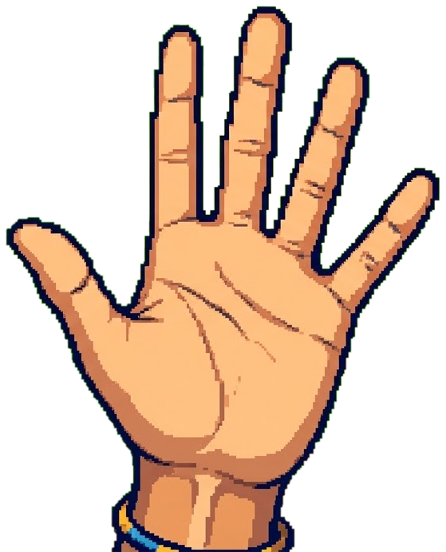
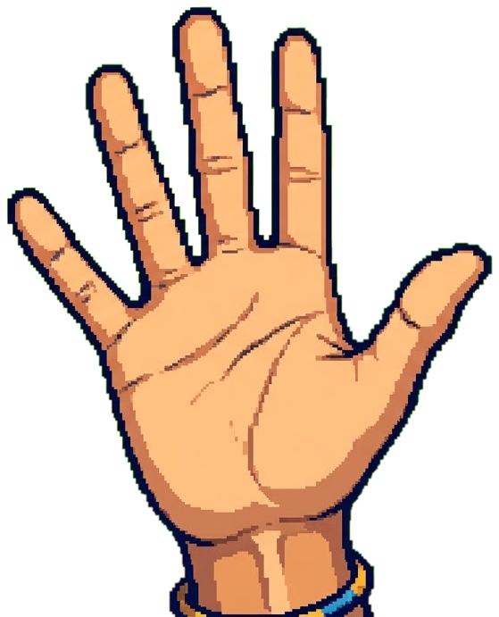
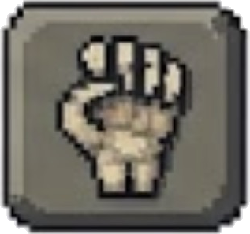

役割
キャラクター
3Dで回転中
（左は3D／右は簡易2D）
色を変える（自由な色）
下半身の形
モデルタイプ
ダンスモデルは肘・膝・足首・背骨の関節を使い、より自然な体つき・ 歩き方になります（エモート用に元々ある骨格を流用、見た目のみで 能力に影響はありません）。
装飾を追加（位置・色は自由）
お絵かき/画像/動画（自分の画面にだけ表示）
動画は自分のキャラから半径5m以内にいる間だけ再生され、離れると自動で 止まって処理が軽くなります（動画は容量が大きいためページ再読み込みでは 引き継がれません。画像/お絵かきは引き継がれます）。
貼るサイズ
貼る場所
色・形・装飾は他の参加者にも見えます。
お絵かき/画像/動画は自分の画面にだけ表示され、他の人には見えません。
相手の先生
武器の見た目
装備中
持参するアイテム（コインで購入。先生役では使えない）
アドオン（最大2つ、追加でコイン購入）
マップ上の「アイテムボックス」からも無料で拾えることがある
マウスを乗せると性能が見られる
装備中（最大4つ）
特性（役割ごとに別プール）
マウスを乗せると効果が見られる
ステージ
難易度
一ノ瀬「ラストスパート」の持続時間
長くするほど1秒あたりの加速は控えめになります（速さ×時間の合計はほぼ一定）
操作
移動 WASD／走る Shift／視点 マウス
行動 E／乗り越え F／能力 Q・R
もがき・連打はクリック（F・J）
椅子・脱落中は F・J で仲間や自分の視点を観戦
プロフィール
みんなで遊ぶ
先生役はホストだけ。友達は空いている生徒枠に入る。
人数が足りない枠は今まで通りAIが埋める。
コードを知っていれば直接入れる。「検索に公開する」をONにした部屋だけサーバー検索に出る。
「クイックプレイ」は世界中の今つながっている人と自動的にマッチング（先生1vs生徒4の通常モードのみ対応）。
総合ランキング（上位20人）
「更新する」を押すと取得します
ポイント = 勝利数 + 脱出成功数（先生役の勝利・生徒役の脱出、どちらも+1点）。
通常/2vs8/怪異退治の全モード合算です。
通信できない時（オフライン等）は表示されないだけで、プレイには影響しません。
卒業アルバム（0/0）
プレイしていると条件を満たしたページから順にめくれていく。
この端末にだけ保存される（他の端末とは共有されない）。
ホストの部屋に接続しました。
ホストが「はじめる」を押すのを待っています…